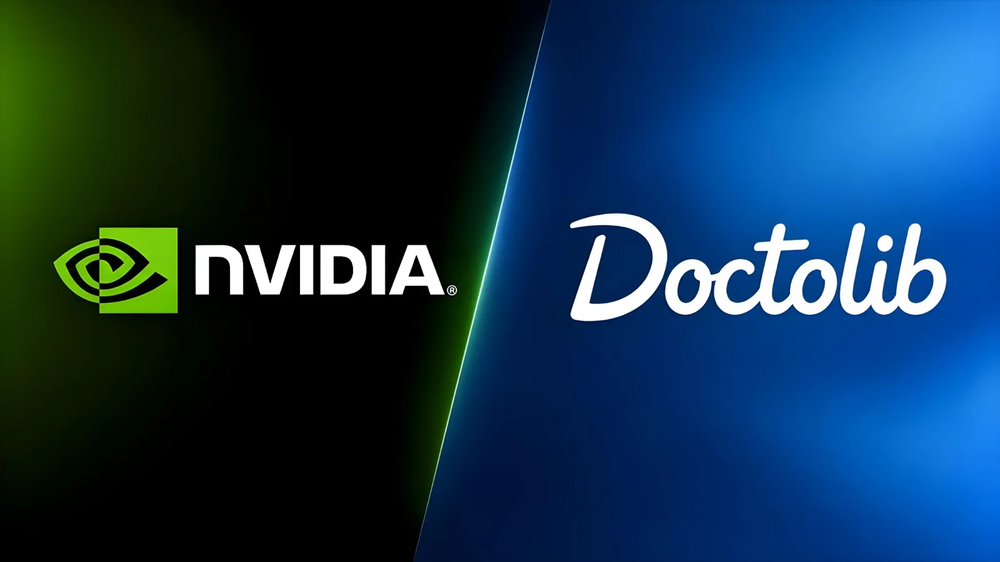

Le mardi 13 octobre 2026, à Paris, le patron de Nvidia, Jensen Huang, a annoncé une prise de participation minoritaire dans Doctolib, la plateforme française de rendez-vous médicaux, ainsi que dans trois start-up françaises d'intelligence artificielle. Le montant n'a pas été dévoilé et le géant américain des puces n'aura pas de siège au conseil d'administration. Pour Doctolib, rentable mais valorisé bien moins cher qu'en 2022, l'opération doit financer ses modèles d'IA ; elle relance aussi le débat sur l'usage des données de santé.
C'est lors d'un point presse à Paris, en pleine tournée européenne et une semaine avant la conférence GTC de Nvidia à Berlin, le 21 octobre, que Jensen Huang a présenté ses nouvelles participations françaises. Outre Doctolib, Nvidia investit dans la start-up franco-américaine Genesis AI, qui conçoit des robots pilotés par l'IA, Pigment, éditeur d'un logiciel de planification pour les entreprises, et Entalpic, qui utilise l'IA générative pour découvrir de nouveaux matériaux pour la chimie et les semi-conducteurs. L'objectif affiché est de « lancer la révolution de l'intelligence artificielle en Europe ». « Nous sommes le plus gros VC d'Europe », a lancé Jensen Huang, en référence au capital-risque.
Aucun montant n'a été communiqué. Selon Le Figaro, la mise de Nvidia dans Doctolib se chiffrerait à quelques millions d'euros, une somme modeste au regard de la valorisation de l'entreprise. Nvidia devient actionnaire minoritaire, sans siège au conseil d'administration, a précisé le cofondateur et PDG de Doctolib, Stanislas Niox-Chateau.
Doctolib utilise déjà les technologies de Nvidia depuis un an pour construire ses propres modèles. Son assistant de consultation, fondé sur un modèle de reconnaissance vocale en français adapté au vocabulaire médical, a déjà documenté plus de 12 millions de consultations ; d'autres assistants gèrent la facturation, le secrétariat, les documents et le codage des actes. Un assistant téléphonique a été lancé fin 2025, et un assistant de santé personnel, testé par 400 000 Français, doit être ouvert à tous les patients en 2027, avant des assistants pour les soignants en 2027 et 2028. Des experts de Nvidia épauleront la « centaine de scientifiques, ingénieurs et designers » de l'équipe IA. Doctolib promet des modèles à poids ouverts et open source, entraînés en Europe, pour dépendre moins d'OpenAI et d'Anthropic.
Fondée en 2013, Doctolib revendique aujourd'hui 520 000 professionnels de santé et 90 millions de patients en France, en Allemagne, en Italie, aux Pays-Bas et au Royaume-Uni. Devenue licorne en 2019, elle a explosé avec la pandémie : 4,5 millions de téléconsultations entre mars et août 2020, et 84,8 millions de rendez-vous de vaccination pris sur la plateforme en janvier 2022. Ses levées successives ont attiré Kernel Investissements, Accel, Bpifrance, Eurazeo puis General Atlantic. En 2022, une levée de 500 millions d'euros l'avait valorisée 5,8 milliards. En avril 2026, environ 300 millions d'euros d'actions ont changé de mains sur la base de 3,6 milliards, soit 38 % de moins. L'entreprise se dit pourtant rentable, avec des revenus récurrents passés de 348 millions d'euros en 2024 à 422 millions en 2025.
| Date | Opération | Valorisation |
|---|---|---|
| Avril 2026 | Cession de 300 M€ d'actions | 3,6 Md€ |
| 2022 | Levée de 500 M€ | 5,8 Md€ |
| 2019 | Levée de 150 M€ | > 1 Md€ |
| 2015 | Levée de 18 M€ | n.c. |
Jensen Huang annonce l'entrée de Nvidia au capital de Doctolib.
Lancement d'un programme de recherche en IA sur les données des patients.
Cession d'actions sur une valorisation de 3,6 milliards d'euros.
Amende de 4,665 millions d'euros de l'Autorité de la concurrence.
Doctolib devient une licorne.
Fondation de Doctolib à Paris.
Pour Nvidia, qui pèse près de deux fois l'ensemble de la Bourse de Paris, ces quelques millions sont presque symboliques : le 6 octobre, son action a touché 243,37 dollars, portant sa capitalisation à 5 840 milliards de dollars en séance. Le groupe a investi au moins 8 milliards de dollars en Europe en 2025 et prévoit d'y injecter 2 milliards supplémentaires en 2026. La logique est autant industrielle que financière : selon Naveen Chhabra, analyste chez Forrester, ces participations servent à garder les partenaires attachés à l'architecture de Nvidia, dont les puces dominent l'entraînement des modèles d'IA. Chaque start-up qui bâtit ses modèles sur ses outils devient un client durable.
« Cet investissement de NVIDIA va nous permettre d'accélérer nos recrutements et nos développements IA. »
— Stanislas Niox-Chateau, cofondateur et PDG de Doctolib, 13 octobre 2026L'annonce s'inscrit dans une séquence où la France se pose en terre d'accueil de l'IA. Le sommet Choose France de juin avait réuni 93 milliards d'euros d'investissements annoncés, tirés par l'intelligence artificielle et les infrastructures numériques, et Mistral AI a présenté le 6 octobre son modèle Mistral Large 4. Mais les capitaux et les puces qui alimentent cet essor restent largement américains.
L'arrivée d'un actionnaire américain tombe à un moment délicat. Début août, Doctolib a lancé un programme de recherche en IA avec l'Inria, l'Inserm et l'Université Paris Cité, qui inclut par défaut les données de santé de 50 millions d'utilisateurs : antécédents, diagnostics, traitements, ordonnances. L'entreprise s'appuie sur une méthodologie de référence de la CNIL qui dispense de consentement individuel, à condition d'informer les patients et de leur permettre de refuser. Le lien d'opposition figurait en bas d'un courriel envoyé le 8 juillet, et le programme a suscité des critiques, notamment de la Ligue des droits de l'Homme selon l'AFP. L'UFC-Que Choisir rappelle que des données pseudonymisées, contrairement à des données anonymisées, permettent encore en théorie de retrouver une personne ; les patients peuvent toujours s'y opposer grâce à un formulaire en ligne.
Doctolib assure héberger ses données de santé en Europe et avait affirmé en juin ne pas les confier aux grandes entreprises américaines d'IA. Rien n'indique que l'entrée de Nvidia lui donne accès à ces données, mais elle pose une question de souveraineté : celle du contrôle, à terme, d'un acteur devenu incontournable dans l'accès aux soins.
En novembre 2025, l'Autorité de la concurrence a infligé à Doctolib une amende de 4,665 millions d'euros pour abus de position dominante sur le marché des rendez-vous médicaux, en lui reprochant des clauses d'exclusivité, des ventes liées et le rachat de son concurrent MonDocteur en 2018. L'entreprise conteste la décision et a fait appel.
L'investissement de Nvidia est minuscule à l'échelle du groupe, mais il dit beaucoup de la nouvelle géographie de l'IA. La santé est l'un des terrains où les données valent le plus, et Doctolib en détient une masse que peu d'acteurs européens possèdent. En entrant à son capital, Nvidia s'assure que ces modèles médicaux seront entraînés sur ses puces.
Pour Doctolib, l'opération est un label autant qu'un financement, au moment où sa valorisation a reculé et où ses usages des données sont contestés. Elle illustre le paradoxe de l'IA « souveraine » européenne : des modèles ouverts, hébergés en Europe, mais construits avec des outils et de l'argent américains. Reste à savoir si cette dépendance est une étape vers l'autonomie ou un état durable.